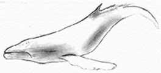

Часть V Рекомендации связанные с резервным копированием
Глава 22 Процедуры резервирования и восстановления данныхВ этой главе
Резервное
копирование и восстановление в Linux
Программа
резервного копирования tar
Создание
резервных копий с tar
Автоматизация
задачи резервного копирования с tar
Восстановление
файлов с tar
Программа
резервного копирования dump
Создание
резервных копий с dump
Восстановление
файлов с dump
Резервное
копирование и восстановление через сеть
|
 |
Краткий
обзор.
Безопасность и надежность сервера вплотную связана с процедурой
регулярного резервного копирования. Иногда могут возникать различные
повреждения. Они могут быть следствием атак, ошибок аппаратного обеспечения,
людских ошибок, перепадов напряжения и пр. Самый надежный метод резервного
копирования это записать данные в место независимое от вашего Linux сервера,
например, через сеть, на стример, сменный носитель, записываемый CD-ROM и
пр.
В Linux существует много методов выполнить резервное
копирование, среди них такие, как "dump", "tar", "cpio" и "dd". Также доступны
утилиты базирующиеся на текстовых файлах, например "Amanda", которая
разработана, чтобы добавить дружественный пользовательский интерфейс к процедуре
резервного копирования и восстановления данных. И наконец, коммерческие пакеты
резервного копирования, например "BRU".
Процедуры выполнения резервного копирования и восстановления
данных будет отличаться в зависимости от выбранного вами решения. Из этих
соображений, мы будем обсуждать здесь процедуру резервного копирования при
помощи традиционных для UNIX утилит: "tar" и "dump".
Что такое резервное
копирование
Основная идея резервного копирования - это создание копий всего
что установлено на вашей системе, но с некоторыми исключениями, о которых мы
напишем ниже. Будет не логичным включать их в ваши резервные копии, так как это
будет напрасная трата времени и пространства на носители. Основными
исключениями, не включаемыми в ваши резервные копии, являются:
- Файловая система "/proc": так как она содержит только данные, которые ядро
генерирует автоматически, и нет никакого смысла сохранять их.
- Файловой системы "/mnt", потому что в нее вы монтируете ваши сменные
носители, подобные CD-ROM, гибким дискам и пр.
- Каталоги и носители, содержащие резервные копии, такие как стримеры, CD-
ROM, смонтированная файловая система NFS, удаленные/локальные каталоги и
прочие виды носителей.
- Программное обеспечение, которое может быть легко повторно установлено,
хотя оно может иметь конфигурационные файлы, которые необходимо копировать,
чтобы не выполнять работы по их настройке позже. Я рекомендую сохранять их
(конфигурационные файлы программного обеспечения) на дискете.
Описание
Программа резервного копирования tar - это программа
архивирования, которая была создана для хранения и извлечения файлов из архива,
известного как тарфайл. Тарфайл может быть создан на лентопротяжном устройстве;
однако, чаще всего тарфайлы записываются как обычные файлы.
Простая схема
резервного копирования
Когда вы решили создавать резервные копии ваших файлов, вы
должны выбрать схему резервного копирования до начала этой процедуры. Существует
множество схем резервного копирования, зависящих от политики резервного
копирования, которую вы хотите использовать. В дальнейшем, я покажу вам одну из
схем, которую вы можете использовать, которая использует преимущественно
возможности программы tar. Эта схема выглядит так: сперва копировать все, что
возможно, а в дальнейшем все, что изменилось со времени создания последней
резервной копии. Первая резервная копия называется полной, а остальные
добавочными.
С шестью лентами вы можете делать резервные копии каждый день;
процедура использует ленту 1 для полного резервного копирования (Пятница 1), и
ленты со 2 по 5 для добавочного резервного копирования (С понедельника по
четверг). Затем, мы делаем новую полную резервную копию на ленту 6 (вторая
пятница), и далее делаем добавочные копии на лентах со 2 по 5. Важно сохранить 1
в неприкосновенности, пока мы не получим полную резервную копию на ленте 6. В
следующем примере, мы подразумеваем, что записываем резервные копии на SCSI
ленточное устройство с именем (/dev/st0), и создаем резервную копию домашнего
каталога (/home) нашей системы.
Первое, мы должны переместиться в корневой раздел. Когда "tar"
создает архивные файлы, он удаляет начальный символ "/" (слеш) из пути к файлу.
Это значит, что после восстановления файлы могут оказаться не на своем месте.
Чтобы решить эту проблему, необходимо до изготовления резервных копий и
восстановления данных переходить в корневой раздел вашей файловой системы.
Переместитесь в корневой раздел:
[root@deep]# cd /
Важно всегда начинать с изготовления полной резервной копии,
например, в пятницу:
- Пятница 1, (используйте ленту 1 для первой полной резервной
копии).
[root@deep /]# cd /
[root@deep /]#
tar cpf /dev/st0 --label=" full-backup created on `date '+%d-%B-%Y'`."
--directory / home
- Понедельник, (используется лента 2 для добавочной резервной
копии).
[root@deep /]# cd /
[root@deep /]#
tar cpNf /dev/st0 --label=" full-backup created on `date '+%d-%B-%Y'`."
--directory / home
- Вторник, (используется лента 3 для добавочной резервной копии).
[root@deep /]# cd /
[root@deep /]# tar cpNf /dev/st0
--label=" full-backup created on `date '+%d-%B-%Y'`." --directory /
home
- Среда, (используется лента 4 для добавочной резервной копии).
[root@deep /]# cd /
[root@deep /]# tar cpNf /dev/st0
--label=" full-backup created on `date '+%d-%B-%Y'`." --directory /
home
- Четверг, (используется лента 5 для добавочной резервной копии).
[root@deep /]# cd /
[root@deep /]# tar cpNf /dev/st0
--label=" full-backup created on `date '+%d-%B-%Y'`." --directory /
home
- Пятница 2, (используется лента 6 для полной резервной копии).
[root@deep /]# cd /
[root@deep /]# tar cpf /dev/st0
--label=" full-backup created on `date '+%d-%B-%Y'`." --directory /
home
Далее, делаем добавочные резервные копии на лентах со 2 по 5 и
так далее.
Опция "c" определяет, что мы создаем архивный файл.
Опция
"p" сохраняет права доступ.
Опция "N" делает добавочную резервную копию и
запоминает файлы новее чем DATE.
Опция "f" говорит, что следующий аргумент
будет либо имя архивного файла, либо имя устройства на которое производится
запись.
Объясним как мы получили имя файла, который содержит текущую
дату: просто поместите команду "date" между обратными кавычками. К основному
имени добавляется суффикс "tar" для не сжатых архивов, и суффикс "tar.gz" для
сжатых. Так как мы не определяем конкретное имя для файла резервной копии, то
воспользуемся опцией "--label", которая позволяет записать некоторую информацию
в архивный файл. В заключении мы определяем, что только файлы из каталога
"/home" будут записаны на ленту.
Так как лента это устройство посимвольного ввода, мы не можем
определить имя файла. Поэтому, в качестве аргумента для опции "имя файла"
программы tar используется просто имя устройства, "/dev/st0". Устройство
"/dev/st0" не перематывается после создания резервной копии; поэтому, мы имеем
возможность записать на одну ленту несколько сессий. Вы можете, также сказать
устройству "/dev/st0", автоматически перемотать ленту после окончания записи
резервной копии. При работы с лентой, вы можете использовать следующие команды
для перематывания и извлечения ленты из устройства:
[root@deep /]# mt -f /dev/st0 rewind
[root@deep /]# mt -f /dev/st0
offline
ПРЕДОСТЕРЕЖЕНИЕ. Для уменьшения пространства занимаемого
tar архивом, резервная копия может быть сжата при помощи опции "z" программы
tar. К сожалению, использование этой опции может создать ряд проблем. Из природы
работы сжатия следует, что если хотя бы один бит будет испорчен, то и все данные
нужные для восстановления будут потеряны. Поэтому рекомендуется не использовать
сжатие (опция "z") для создания резервной копии при помощи команды tar.
Если ваша резервная копия не помещается на ленте, то вам надо
использовать опцию --multi-volume (-M) для создания многотомных
архивов:
[root@deep /]# cd /
[root@deep /]#
tar cMpf /dev/st0 /home
Prepare volume #2 for /dev/st0 and hit
return:
После того, как вы создали резервную копию, вы должны
убедиться, что все OK, используя опцию --compare (-d):
[root@deep /]# cd /
[root@deep /]# tar dvf /dev/st0
Для резервного копирования всей системы используйте следующую
команду:
[root@deep /]# cd /
[root@deep /]#
tar cpf /archive/full-backup-`date '+%d-%B-%Y'`.tar \
--directory /
--exclude=proc --exclude=mnt --exclude=archive \
--exclude=cache
--exclude=*/lost+found .
Опция "--directory" говорит tar, что до начала резервного
копирования надо перейти в следующий каталог (в нашем примере "/"). Опция
"--exclude" говорит tar не создавать резервные копии заданных каталогов и
файлов. Символ ".", находящийся в конце командной строки говорит tar, что он
должен копировать все в текущем каталоге.
ПРЕДУПРЕЖДЕНИЕ. Когда вы создаете резервную копию вашей
системы, не включайте в нее псевдофайловую систему "/proc"! Файлы "/proc" не
настояшие файлы, это просто файлоподобные ссылки к структуре ядра. Также не
включайте каталоги "/mnt", "/archive" и все "lost+found".
Всегда интересно автоматизировать задачу резервного
копирования. Автоматизация предлагает огромные возможности использования вашего
Linux сервере для целей, которые вы поставили. Следующий пример, представляет из
себя скрипт для резервного копирования, называемый "backup.cron". Этот скрипт
написан для запуска на любом компьютере, при этом, вы должны поменять только
четыре переменные: COMPUTER, DIRECTORIES, BACKUPDIR и TIMEDIR. Мы считаем, что
вы устанавливаете этот сценарий для запуска его в начале месяца для получения
полной резервной копии, а затем используете его в течении месяца для получения
добавочных копий. В нашем примере, мы создаем резервную копию в каталоге на
локальном сервере (BACKUPDIR), но вы можете изменить это для использования ленты
на локальном сервере или смонтированной файловой системы NFS.
Шаг 1
Создайте скрипт резервного копирования backup.cron (touch
/etc/cron.daily/backup.cron) и добавьте в него следующие строки:
#!/bin/sh
# скрипт полного и добавочного резервного копирования
# создан 07 февраля 2000
# Базируется на скрипте Daniel O'Callaghan <[email protected]>
# и модифицирован Gerhard Mourani <[email protected]>
# Измените следующие пять переменных под вашу систему
COMPUTER=deep # имя этого компьютера
DIRECTORIES="/home" # каталог для резервного копирования
BACKUPDIR=/backups # где храним резервные копии
TIMEDIR=/backups/last-full # где сохраняем время полной резервной копи
TAR=/bin/tar # имя и расположение tar
#Вы не должны менять то, что написано ниже
PATH=/usr/local/bin:/usr/bin:/bin
DOW=`date +%a` # День недели, например Mon
DOM=`date +%d` # Дата, например 27
DM=`date +%d%b` # Дата и месяц, например 27Sep
# 1-го числа каждого месяца постоянно делаем полную резервную копию
# Каждое воскресенье делаем полную копию - переписываем копию от
# последнего воскресенья
# В остальное время делаем добавочную резервную копию. Каждая добавочная
# резервная копия переписывает добавочную копию с предыдущей недели, с
# тем же именем.
#
# если NEWER = "", тогда tar создает резервные копии всех файлов в каталог,
# иначе только новее чем дата в NEWER. NEWER берет дату из файла
# записываемого каждое воскресенье.
# Ежемесячная полная резервная копия
if [ $DOM = "01" ]; then
NEWER=""
$TAR $NEWER -cf $BACKUPDIR/$COMPUTER-$DM.tar $DIRECTORIES
fi
# Еженедельная полная резервная копия
if [ $DOW = "Sun" ]; then
NEWER=""
NOW=`date +%d-%b`
# Обновление даты еженедельной полной резервной копии
echo $NOW > $TIMEDIR/$COMPUTER-full-date
$TAR $NEWER -cf $BACKUPDIR/$COMPUTER-$DOW.tar $DIRECTORIES
# Создание добавочной резервной копии - переписывание аналогичной с
# последней недели
else
# Берем дату последней полной резервной копии
NEWER="--newer `cat $TIMEDIR/$COMPUTER-full-date`"
$TAR $NEWER -cf $BACKUPDIR/$COMPUTER-$DOW.tar $DIRECTORIES
fi
Здесь приводится список файлов созданных после недели работы
данного скрипта:
[root@deep /]# ls -l
/backups/
total 22217
-rw-r--r-- 1 root root 10731288 Feb 7 11:24
deep-01Feb.tar
-rw-r--r-- 1 root root 6879 Feb 7 11:24
deep-Fri.tar
-rw-r--r-- 1 root root 2831 Feb 7 11:24
deep-Mon.tar
-rw-r--r-- 1 root root 7924 Feb 7 11:25
deep-Sat.tar
-rw-r--r-- 1 root root 11923013 Feb 7 11:24
deep-Sun.tar
-rw-r--r-- 1 root root 5643 Feb 7 11:25
deep-Thu.tar
-rw-r--r-- 1 root root 3152 Feb 7 11:25
deep-Tue.tar
-rw-r--r-- 1 root root 4567 Feb 7 11:25
deep-Wed.tar
drwxr-xr-x 2 root root 1024 Feb 7 11:20 last-full
ЗАМЕЧАНИЕ. Каталог в котором вы планируете хранить
резервные копии (BACKUPDIR) и каталог , где запоминаете время (TIMEDIR) должны
быть созданы до запуска этого скрипта, иначе вы получите сообщение об
ошибке.
Шаг 2
Если вы не запустили этот скрипт вначале месяца (1 день
месяца), добавочным резервным копиям для корректной работы будет нужно время
полной воскресной резервной копии. Если вы запускаете скрипт в середине недели,
вам нужно создать файл со временем в TIMEDIR. Для этого выполните следующую
команду:
[root@deep /]# date +%d%b >
/backups/last-full/myserver-full-date
где </backups/last-full> ваша переменная TIMEDIR,
описывающая место хранения даты последней полной резервной копии, а
<myserver-full-date> - это имя вашего сервера (например, deep); наш файл
времени состоит из одной строки содержащей дату (например 15-Feb).
Шаг
3
Сделайте скрипт исполняемым и измените права доступа к нему
(755).
[root@deep /]# chmod 755
/etc/cron.daily/backup.cron
ЗАМЕЧАНИЕ. Так как этот скрипт расположен в каталоге
"/etc/cron.daily", он будет автоматически выполняться в час ночи каждый
день.
Более важным, чем выполнение регулярных резервных копий,
является их доступность в момент, когда надо восстановить информацию! Здесь мы
рассмотрим методы восстановления файлов, которые были скопированы командой
"tar".
Следующая команда будет восстанавливать все файлы из архива
"full-backup- Day-Month-Year.tar", который является примером резервной копии
нашего каталога "home" и был создан в нашем примере описанном выше. Для
восстановления полной резервной копии каталога "home" используйте следующую
команду:
[root@deep /]# cd / [root@deep /]# tar
xpf /dev/st0/full-backup-Day-Month-Year.tar
Вышеприведенная команда извлекает все файлы, содержащиеся в
архиве, сохраняя оригинальные значения владельцев файлов и прав доступа к
ним.
Опция "x" обозначает извлечение файлов.
Опция "p" сохраняет
права доступа.
Опция "f" указывает на то, что следующим аргументом является
имя архива или устройства.
Если вам не надо извлекать все файлы и каталоги из архива, вы
можете указать, что вам нужно.
Для задания одного или более файлов, которые вы хотите извлечь
из архива используйте следующую команду:
[root@deep]# cd /
[root@deep]# tar xpf
/dev/st0/full-backup-Day-Month-Year.tar \
home/wahib/Personal/Contents.doc
home/quota.user
Вышеприведенная команда извлекает файлы
"/home/wahib/Personal/Contents.doc" и "/home/quota.user" из архива. Если вы
хотите посмотреть, какие файлы находятся в архиве, то используйте опцию --list
(-t):
[root@deep /]# tar tf /dev/st0
ПРЕДУПРЕЖДЕНИЕ. Если вы имеете в своей системе файлы с
установленным битом "постоянства", то используйте команду "chattr +i", так как
этот бит не сохраняется при резервном копировании при помощи команды tar.
Тестирование возможности восстановления из резервных копий
Для многих системных администраторов, восстановление файлов из
резервной копии редкое действие. Периодическое выполнение проверки возможности
восстановления файлов из резервных копий поможет вам выявить проблемы с
процедурами резервного копирования, чтобы вы могли скорректировать их до того,
как потеряете данные. Некоторое программное обеспечение восстановления файлов
некорректно восстанавливает права доступа и владельца файлов. Проверьте атрибуты
восстановленных файлов, чтобы они были установлены правильно. Периодически
тестируйте возможность полного восстановления системы из ваших резервных
копий.
Дополнительная документация
Для получения больших деталей вы можете прочитать следующую
страницу
руководства (man):
tar (1) - GNU версия утилиты
архивирования данных tar